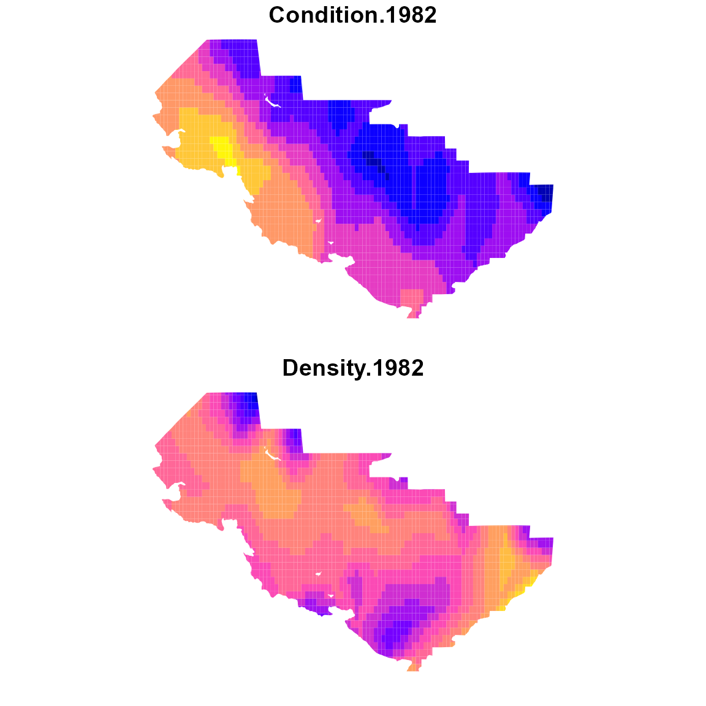

tinyVAST is an R package for fitting vector
autoregressive spatio-temporal (VAST) models using a minimal and
user-friendly interface. We here show how it can fit a bivariate
spatio-temporal model representing density dependence in physiological
condition for fishes.
This replicates a similar vignette provided for the VAST package, but
showcases several improvements in interpretation and interface.
We first load and combine the two data sets:
data( condition_and_density )
# Combine both parts
combo_data = plyr::rbind.fill( condition_and_density$condition,
condition_and_density$density )
# Reformat data in expected format
formed_data = cbind( combo_data[,c("Year","Lat","Lon")],
"Type" = factor(ifelse( is.na(combo_data[,'Individual_length_cm']),
"Biomass", "Condition" )),
"Response" = ifelse( is.na(combo_data[,'Individual_length_cm']),
combo_data[,'Sample_biomass_KGperHectare'],
log(combo_data[,'Individual_weight_Grams']) ),
"log_length" = ifelse( is.na(combo_data[,'Individual_length_cm']),
rep(0,nrow(combo_data)),
log(combo_data[,'Individual_length_cm'] / 10) ))
#
#formed_data$Year_Type = paste0( formed_data$Year, "_", formed_data$Type )We then construct the SPDE mesh
# make mesh
mesh = fm_mesh_2d( formed_data[,c('Lon','Lat')], cutoff=1 )Next, we specify spatial and spatio-temporal variance in both condition and density.
#
sem = "
Biomass <-> Biomass, sdB
Condition <-> Condition, sdC
Biomass -> Condition, dens_dep
"
#
dsem = "
Biomass <-> Biomass, 0, sdB
Condition <-> Condition, 0, sdC
Biomass -> Condition, 0, dens_dep
"Finally, we define the distribution for each data set using the
family argument:
Finally, we fit the model using tinyVAST
# fit model
fit = tinyVAST( data = formed_data,
formula = Response ~ interaction(Year,Type) + log_length,
spatial_domain = mesh,
control = tinyVASTcontrol( trace=0, verbose=TRUE, profile="alpha_j" ),
space_term = sem,
spacetime_term = dsem,
family = Family,
variables = c("Biomass","Condition"),
variable_column = "Type",
space_columns = c("Lon", "Lat"),
time_column = "Year",
distribution_column = "Type",
times = 1982:2016 )We can look at structural parameters using summary functions:
# spatial terms
summary(fit, "space_term")
#> heads to from parameter start Estimate Std_Error
#> 1 2 Biomass Biomass 1 <NA> 1.423877e+00 0.133046724
#> 2 2 Condition Condition 2 <NA> -3.316246e-02 0.004167510
#> 3 1 Condition Biomass 3 <NA> 9.309489e-05 0.004855068
#> z_value p_value
#> 1 10.70207989 9.951894e-27
#> 2 -7.95737994 1.757205e-15
#> 3 0.01917479 9.847017e-01
# spatio-temporal terms
summary(fit, "spacetime_term")
#> heads to from parameter start lag Estimate Std_Error
#> 1 2 Biomass Biomass 1 <NA> 0 0.966428090 0.024274917
#> 2 2 Condition Condition 2 <NA> 0 -0.040541754 0.002723395
#> 3 1 Condition Biomass 3 <NA> 0 0.008201899 0.003339309
#> z_value p_value
#> 1 39.811797 0.000000e+00
#> 2 -14.886478 4.034736e-50
#> 3 2.456167 1.404279e-02Abundance-weighted expansion
To explore output, we can plot output using the survey extent:
# Extract shapefile
region = condition_and_density$eastern_bering_sea
# make extrapolation-grid
sf_grid = st_make_grid( region, cellsize=c(0.2,0.2) )
sf_grid = st_intersection( sf_grid, region )
sf_grid = st_make_valid( sf_grid )
n_g = length(sf_grid)
#
grid_coords = st_coordinates( st_centroid(sf_grid) )
areas_km2 = st_area( sf_grid ) / 1e6
# Condition in
newdata = data.frame( "Lat" = grid_coords[,'Y'],
"Lon" = grid_coords[,'X'],
"Year" = 1982,
"Type" = "Condition",
#"Year_Type" = "1982_Condition",
"log_length" = 0 ) # Average log-length across years
cond_1982 = predict(fit, newdata=newdata, what="p_g")
# Repeat for density
newdata2 = newdata
newdata2$Type = "Biomass"
#newdata2$Year_Type = "1982_Biomass"
dens_1982 = predict(fit, newdata=newdata2, what="p_g")
# Plot on map
plot_grid = st_sf( sf_grid,
"Condition.1982" = cond_1982,
"Density.1982" = dens_1982 )
plot( plot_grid, border=NA )
Density-weighted condition
Finally, we can calculate density-weighted condition, using local numerical density as weighting term while averaging across the model domain. Condition will be in units mass per allometric-length and the model is estimating the allometric weight-length relationship jointly with condition. Therefore, condition will have units that are not directly comparable with either weight or density.
#
expand_data = rbind( newdata2, newdata )
#
cond_tz = data.frame( "Year"=1998:2016, "Est"=NA, "SE"=NA )
for( yearI in seq_len(nrow(cond_tz)) ){
expand_data[,'Year'] = cond_tz[yearI,"Year"]
out = integrate_output( fit,
newdata = expand_data,
area = c(as.numeric(areas_km2),rep(0,n_g)),
type = rep(c(0,3),each=n_g),
weighting_index = c( rep(0,n_g), seq_along(areas_km2)-1 ),
bias.correct = TRUE )
cond_tz[yearI,c("Est","SE")] = out[c("Estimate","Std. Error")]
}
# plot time-series
ggplot( cond_tz ) +
geom_line( aes(x=Year, y=Est) ) +
geom_ribbon( aes(x=Year, ymin=Est-SE, ymax=Est+SE), alpha=0.2 )